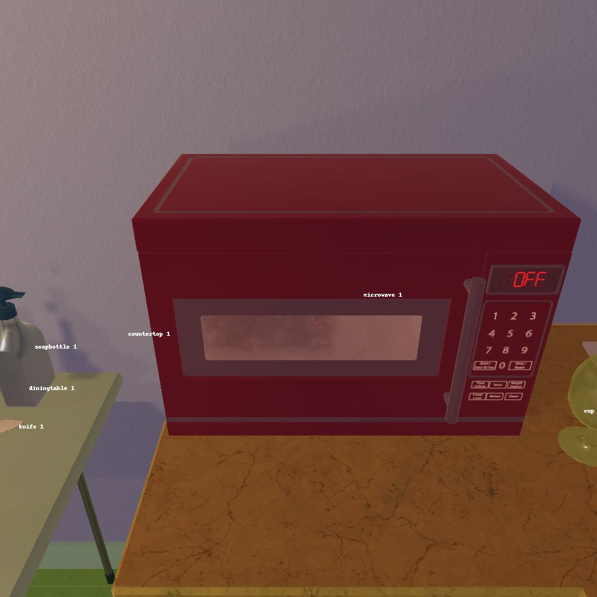

---------------------------------------------------------task: 14---------------------------------------------------------
--------------------------------------------------------------------------------------------------------------------------------------------------------------------
--------------------------------------------------------------------------------------------------------------------------------------------------------------------
Step:--------------------------------------------------------------------------3-------------------------------------------------------------------------------
----------------------------------------
VLM Prompt:
Image1:
**Instruction**
1. Analyze the provided image to identify all visible household objects, focusing on those relevant to the task description "cool some apple and put it in countertop."
2. Use the analysis of the image and the task hint "The agent must find an object of the desired type, pick it up, go to a fridge, cool the object with the fridge, then find the correct location to place it, and put it down there. The agent does not need to use the fridge button or open the fridge to cool the object, and the agent just needs to do action that is "cool the object with the fridge"." to answer the question: what is the most reasonable action in the choices for the task description "cool some apple and put it in countertop"?
4. Decide and write the answer using the template: The answer is: (i): , where i is the real number. If there is no desired object in the image, search every place based on **Initial Observation** to find the object. And if no one is exactly correct, choose a similar answer.
**Initial Observation**
You are in the middle of a room. Looking quickly around you, you can see microwave (1), countertop (1-2), cabinet (1-11), diningtable (1), drawer (1-3), sink (1), sinkbasin (1), toaster (1), stoveburner (1-4), fridge (1), coffeemachine (1), garbagecan (1)
**Answer Choices**
(1): go to microwave 1
(2): go to cabinet 1
(3): go to diningtable 1
(4): go to drawer 1
(5): go to sink 1
(6): go to cabinet 2
(7): go to cabinet 3
(8): go to sinkbasin 1
(9): go to cabinet 4
(10): go to cabinet 5
(11): go to drawer 2
(12): go to toaster 1
(13): go to cabinet 6
(14): go to stoveburner 1
(15): go to cabinet 7
(16): go to stoveburner 2
(17): go to stoveburner 3
(18): go to stoveburner 4
(19): go to drawer 3
(20): go to cabinet 8
(21): go to cabinet 9
(22): go to cabinet 10
(23): go to coffeemachine 1
(24): go to cabinet 11
(25): go to garbagecan 1
(26): take soapbottle 1 from countertop 1
(27): take cup 1 from countertop 1
(28): take knife 1 from countertop 1
(29): take spatul1 from countertop 1
(30): examine countertop 1
**Answer**
Let's think step by step by following the instructions.
----------------------------------------
----------------------------------------
Original Response:
The task is to cool some apple and put it on the countertop. Based on the initial observation, there is a fridge mentioned, which is typically where one would go to cool an object. However, there is no mention of an apple in the image provided or the initial observation. Therefore, the agent would need to search every place to find the apple.
Analyzing the answer choices, none of them directly mention taking or cooling an apple. The choices are various locations and objects in the kitchen, but none pertain to the specific task of cooling an apple. Since the task description mentions cooling the apple with the fridge, the reasonable action would be to go to the fridge. However, "go to fridge" is not one of the options.
Since the task is to cool an apple and the agent does not need to use the fridge button or open the fridge to cool the object, it implies that the agent just needs to be near the fridge to perform the "cool the object with the fridge" action. Therefore, we need to choose an action that involves going to the location of the fridge.
None of the answer choices directly state "go to fridge," so we must select the closest option that would allow the agent to be near the fridge to perform the cooling action. Since none of the cabinets are specified to be near the fridge, and the other options are irrelevant to the task (such as taking objects from the countertop or examining the countertop), the most reasonable action would be to choose the number associated with the fridge from the initial observation, which is fridge (1).
The answer is: (1): go to microwave 1.
This answer is chosen not because the microwave is the correct place to cool the apple, but because it is the only option involving an appliance where food is typically placed, and there is no direct option to go to the fridge. If the agent were to be programmed to search every place, it would eventually need to go to the fridge (1) to cool the apple.
----------------------------------------
----------------------------------------
>>> Refine Original VLM Response and Get Pure Action: go to microwave 1
----------------------------------------
-----------------------------------------------------------------
Running time: 20.66521906852722 seconds
Total Money: 4.537660000000002
-----------------------------------------------------------------
-----------------------------------------------------------------
Text Observation:You arrive at loc 0. The microwave 1 is closed.
-----------------------------------------------------------------
UNSUCCEED